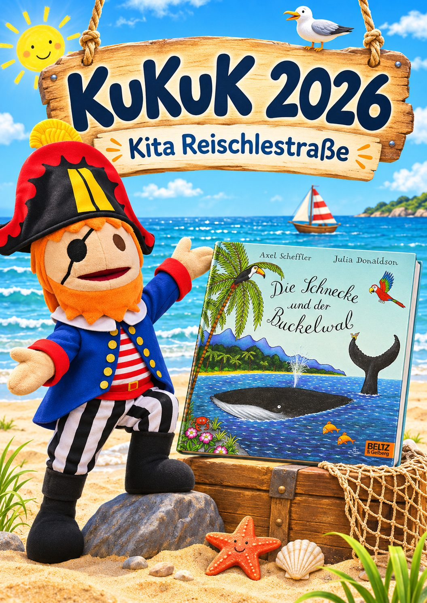

🎵 Musik
Rhythmus, Melodien, Lieder und Reime machen Freude und helfen den Kindern ganz nebenbei, Wörter und Laute besser zu erkennen und zu behalten.

Los geht’s ⚓Kita Reischlestraße
Kunst und Kultur im Kindergarten – Musik, Tanz und Theater bei uns in der Kita
Gemeinsam singen, Rhythmus entdecken, sich zur Musik bewegen, in Rollen schlüpfen und Theater spielen: Bei KuKuK kommen Kulturschaffende aus den Bereichen Musik, Tanz und Theater in unsere Kita und gestalten mit den Kindern kreative Einheiten.
Unser Bilderbuch als roter Faden ist in diesem Jahr „Die Schnecke und der Buckelwal“ von Axel Scheffler und Julia Donaldson – eine Reise über die Meere, bei der auch ein ganz kleines Wesen Großes bewirken kann.
KuKuK ist ein Projekt der Stiftung Kinderförderung von Playmobil (Kultur Kiesel – Kulturelle Bildung an Lech und Wertach) und läuft über drei Jahre.
Rhythmus, Melodien, Lieder und Reime machen Freude und helfen den Kindern ganz nebenbei, Wörter und Laute besser zu erkennen und zu behalten.
Mit dem ganzen Körper lernen: Wörter wie „groß“, „klein“ oder „schleichen“ werden durch Bewegung lebendig und leichter verstanden.
Die Kinder erfinden Szenen, erkunden Stimme und Körper und spielen eine Geschichte nach. So entstehen ganz viele Sprachanlässe.
Mehr zum Projekt: kinderstiftung-playmobil.de
Zum Schutz der Kinder zeigen wir hier nur Bilder ohne erkennbare Gesichter – zum Beispiel Hände, Instrumente, Kostüme und entstandene Werke.
KuKuK möchte eine Brücke zu den Elternhäusern bauen: Was die Kinder in der Kita erleben, darf gern zu Hause weiterklingen. Singen Sie Lieder mit Ihrem Kind, bewegen Sie sich gemeinsam zur Musik oder lassen Sie sich von Ihrem Kind erzählen, was es erlebt hat.
Fragen? Sprechen Sie uns einfach in der Kita an.